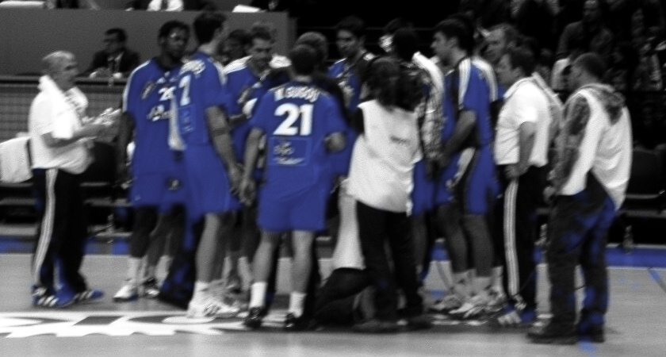
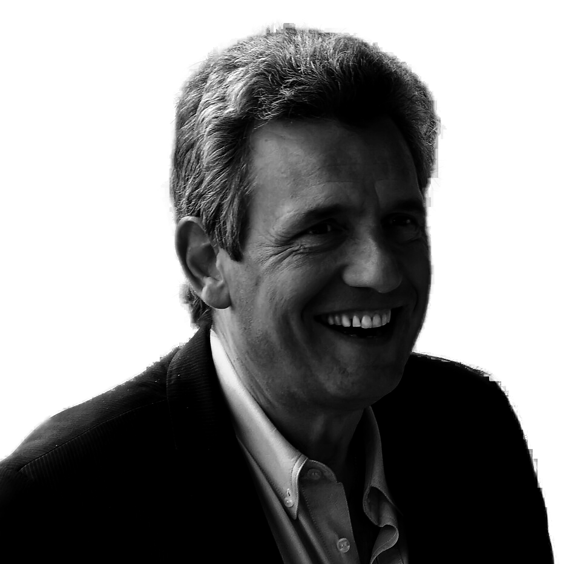

TIEMPO MUERTO DE FRANCIA · FOTO DE 2009
Foto: A1B2C3D4, 2009 · CC BY-SA 3.0
FRANCIA · BALONMANO

SELECCIONADOR · 2001–2016C. ONESTA
Foto: Patrick Subotkiewiez, 2010 · CC BY 2.0
«Ils proposent, régulent, innovent»
CLAUDE ONESTA · CAFÉ PÉDAGOGIQUE, 2011
«La stratégie de jeu n'appartient pas à l'entraîneur»
CLAUDE ONESTA · ÉCOLE DE PARIS DU MANAGEMENT, 2017
DECIDE
«Tout le monde s'exprime mais, à un moment donné, je décide»
CLAUDE ONESTA · LE PETIT JOURNAL, 2025
Fotos: A1B2C3D4 (CC BY-SA 3.0) y Patrick Subotkiewiez (CC BY 2.0), modificadas, vía Wikimedia Commons. Pizarra, fichas y medallas: recreación.